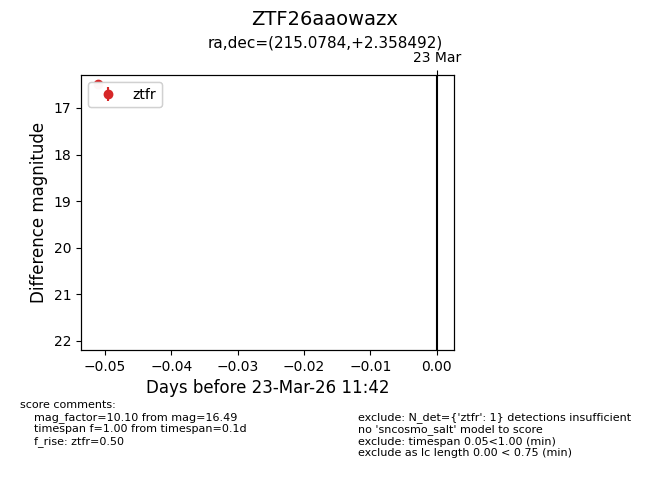
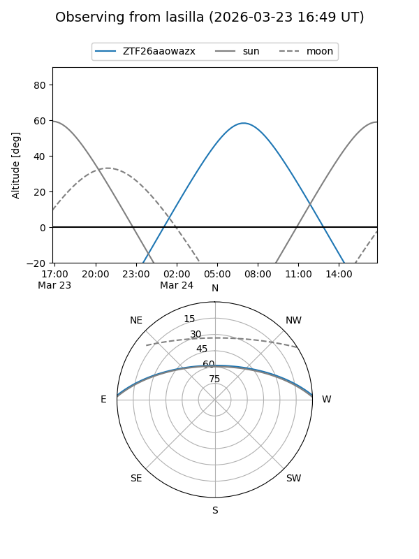
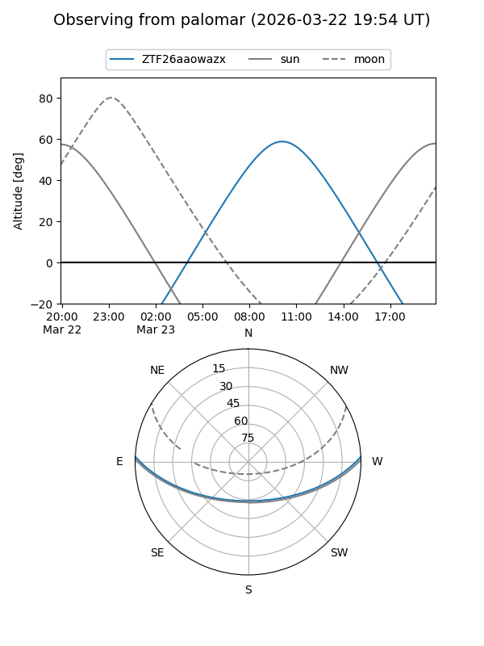

ZTF26aaowazx
Target ZTF26aaowazx at 2026-03-23 11:44
Aliases and brokers:
FINK: link
Lasair: link
ALeRCE: link
alt names
ZTF26aaowazx (ztf,fink_ztf)
Coordinates:
equatorial (ra, dec) = 215.0784,+2.35849
equatorial (HMS+DMS) = 14:20:18.82,+02:21:30.57
galactic (l, b) = (347.3825,+57.34866)
Flags:
Photometry:
last ztfr=16.49
1 ztfr detections
Lightcurve

Visibility


Additional plots